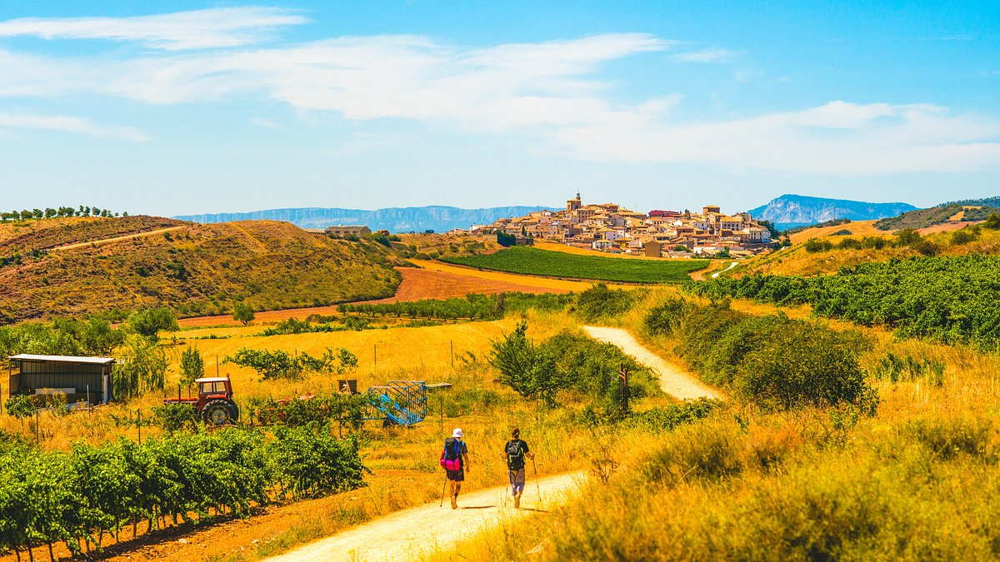
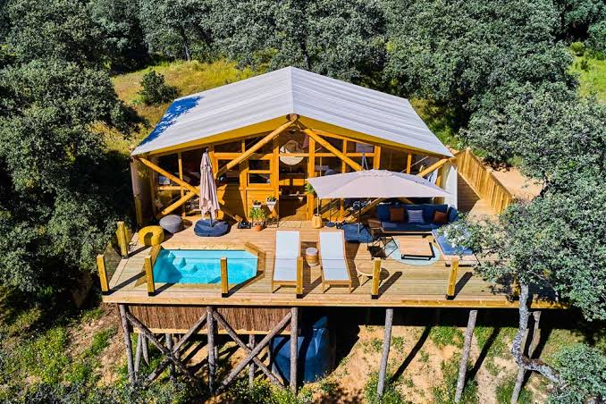
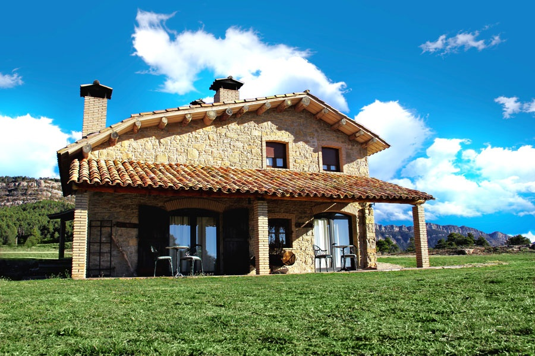

Ruta del Norte
Dificultad Media | 12 KM
Descubre los parajes más impresionantes con nuestras rutas sostenibles.
Ver Catalogo
Dificultad Media | 12 KM

Dificultad Alta | 18 KM

Dificultad Baja | 5 KM

Valoración: 4.8/5

Valoración: 4.5/5